A repair bench game
CIRCUITS
Fix broken electronics on your own bench.
Customers bring broken devices. You open the case, measure, find the faulty part, fix it and hand it back. A circuit simulator sets every number you read.
How a job goes
Every job has a paper ticket: what the customer says, what the bench will test, and what it pays.
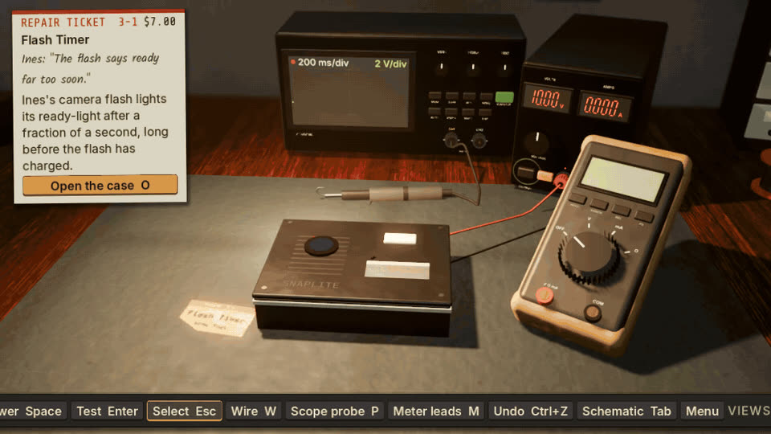
The device arrives. Read the ticket. The customer waits at the counter.
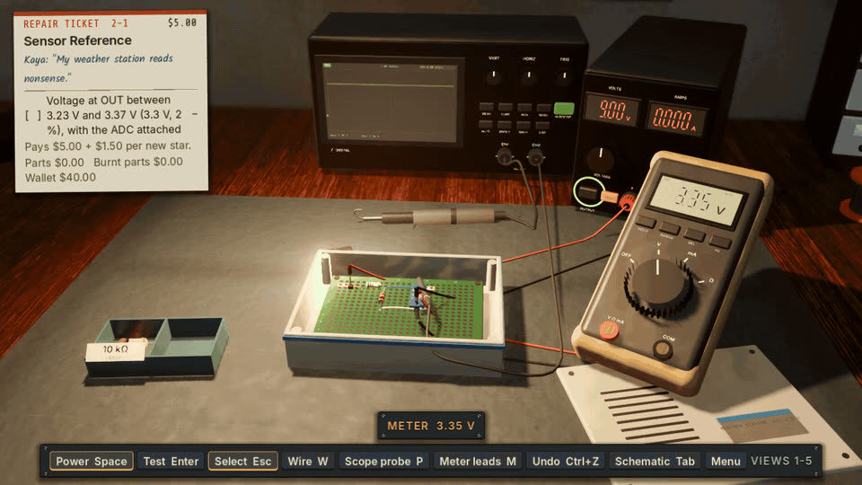
Open it and measure. Put the meter or the scope on it before you change anything.
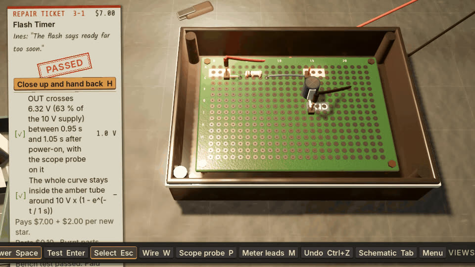
Fix it. Swap the wrong value, add the missing part, rewire. Then run the bench test.
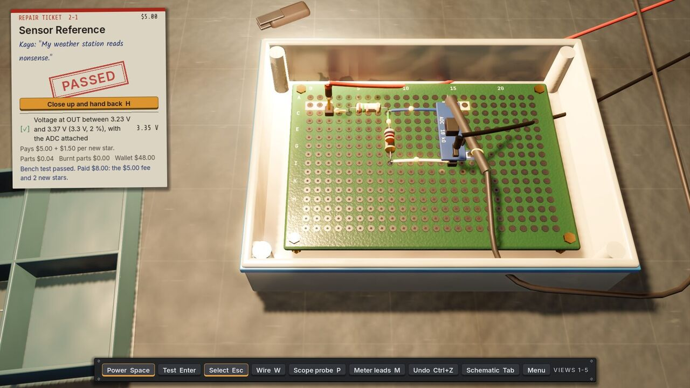
Hand it back. Pass first time and the customer tips. A burnt part comes out of your pay.
The testbed
Six working devices to take apart. Probe them live, break them on purpose, then pause and step time to see what happened.
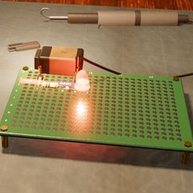
Pocket torchAn LED, a resistor, a 9 V battery.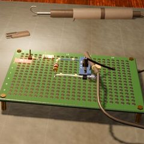
Weather station inputA divider feeding an ADC.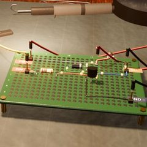
Fan driverA transistor switch and its flyback diode.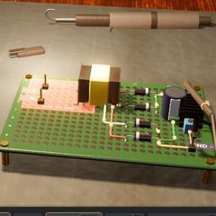
Phone charger stageA bridge rectifier and its capacitor.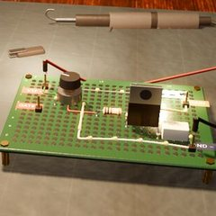
Lamp dimmerA knob, a transistor, an LED strip.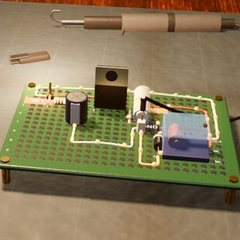
Relay timerA capacitor that switches a heater on after about two seconds.
Five chapters, 23 jobs
Each chapter ends in an exam: predict the numbers first, then build it and let the bench measure.
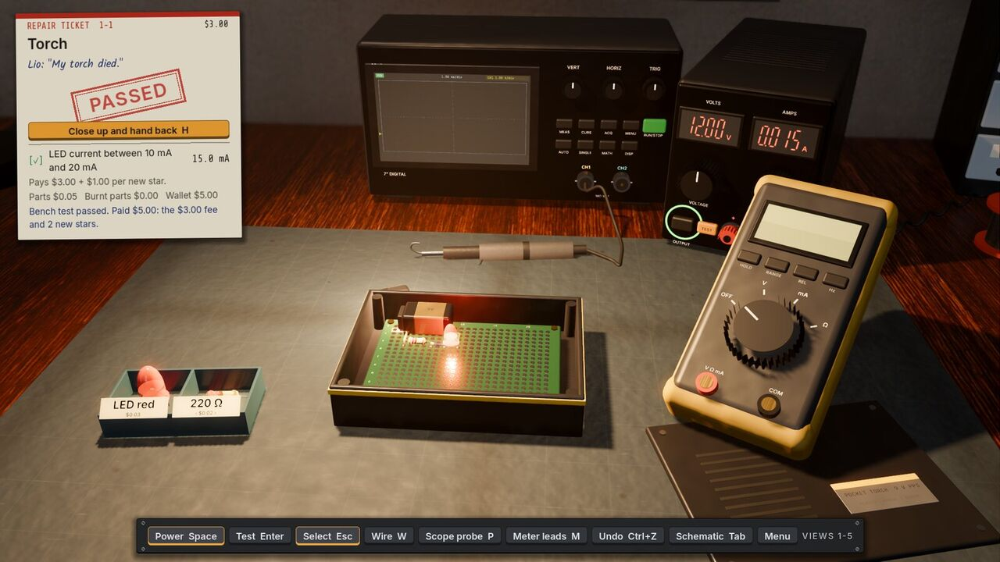
Chapter 1
First Light
Ohm's law, LED current, power ratings and a tired battery.
Torch · Tail-light · Hot Resistor · Tired Battery · Exam
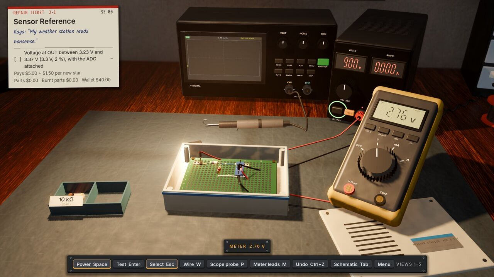
Chapter 2
Divide & Measure
Dividers under load, a bridge balanced to zero, and a sealed box measured and copied.
Sensor Reference · Cable Fault · Black Box · Exam
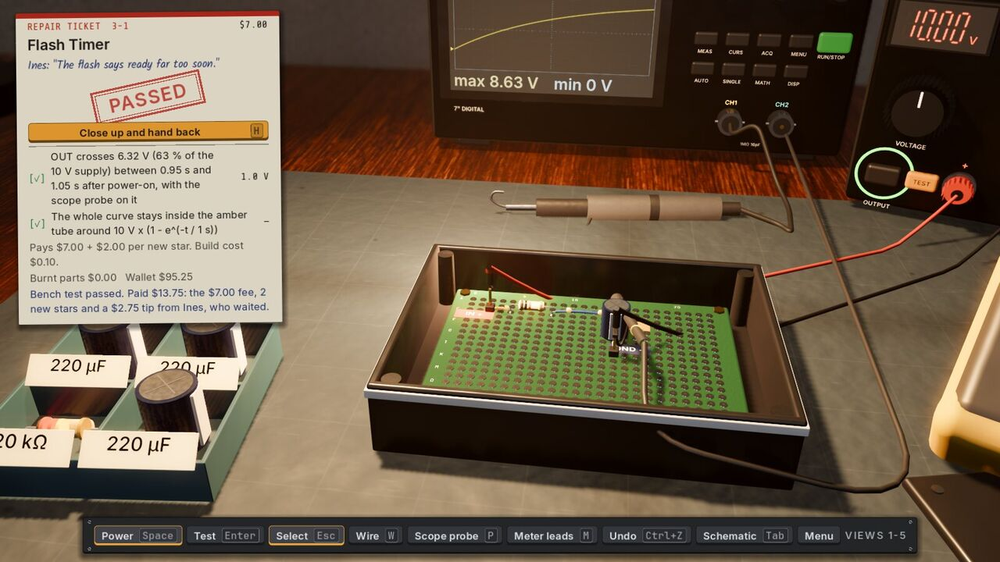
Chapter 3
Charge
RC timing, a filter for a bouncing button, a relay's pull-in current and shared charge.
Flash Timer · Debounce · Relay Pull-in · Exam
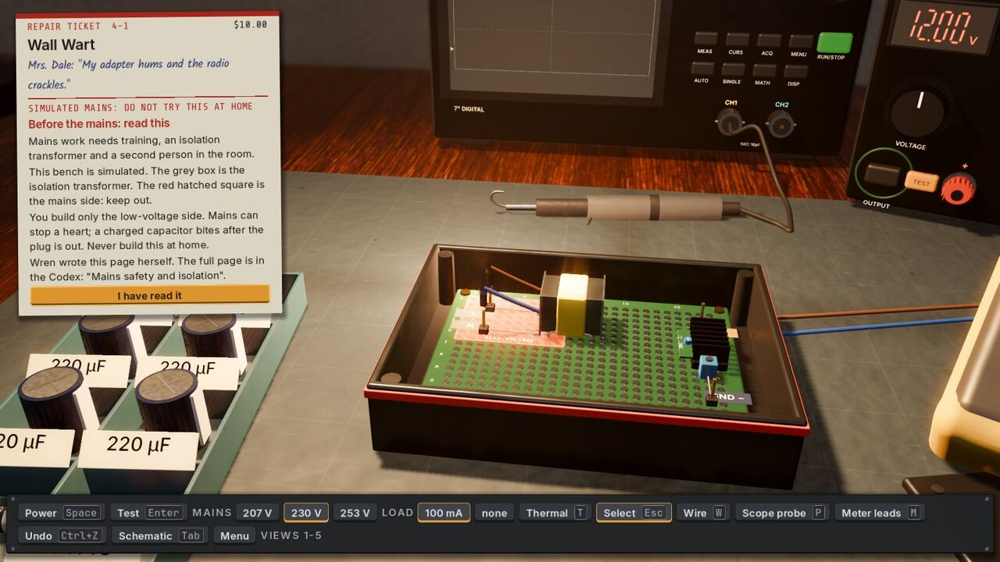
Chapter 4
Mains & Rectifiers
Transformer, bridge and ripple behind a simulated isolated mains, Zener rails, regulator heat, an LM317.
Wall Wart · Zener Shunt · Hot Regulator · Bench Supply · Exam
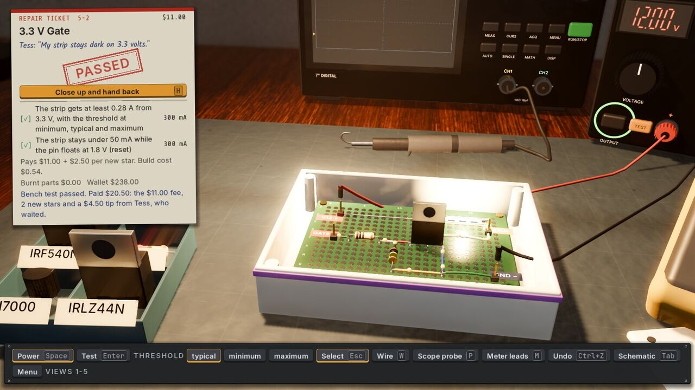
Chapter 5
Switches & Gain
A transistor switch and its flyback diode, a 3.3 V MOSFET gate, a NAND from parts, a one-transistor preamp.
Fan Driver · 3.3 V Gate · Gate Builder · Synth Preamp · Exam
Planned
Designed on paper and not built yet.
- Chapter 6 · Op-Amp AlleyAmplifiers, comparators, an integrator.
- Chapter 7 · Tone & ResonanceFilters, resonance and Q, a Bode plotter.
- Chapter 8 · OscillateA 555, an oscillator, a buck converter, a synth voice.
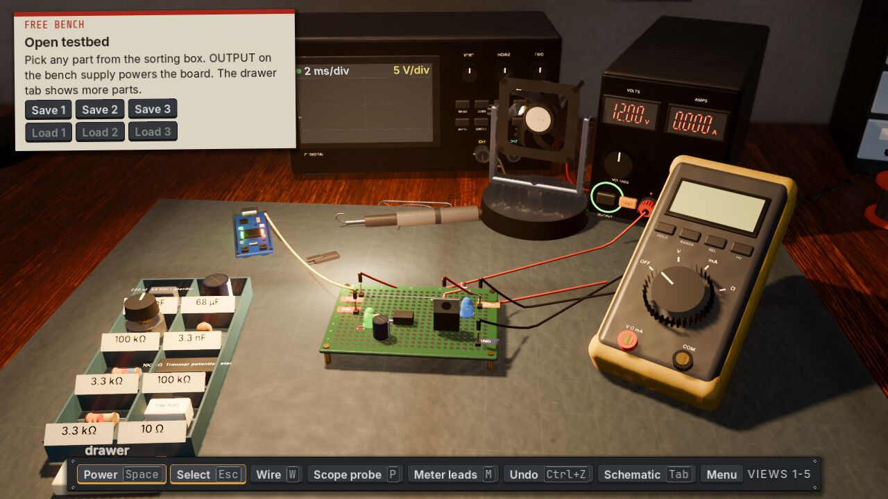
The free bench
No ticket, no customer. Any part from the catalogue, the bench supply, the scope and the meter. Build what you like and keep it in one of three save slots.
Any partBench supplyScopeMeterSchematic viewThree save slots
Download
Free. Unzip and play. Pre-alpha: five chapters and 23 jobs are built; chapters 6 to 8 are planned.
All builds and checksums: releases on GitHub.
The wiki
Every job, what the bench tests before it pays, the parts in each box, and the controls.